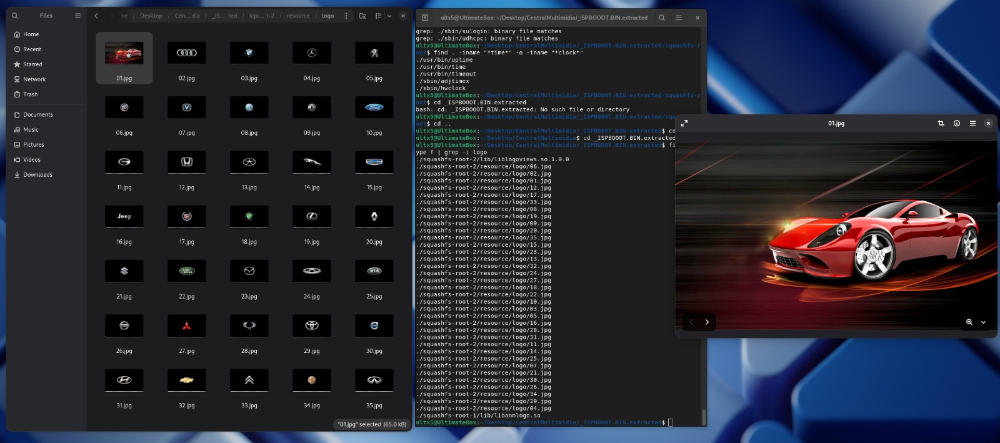
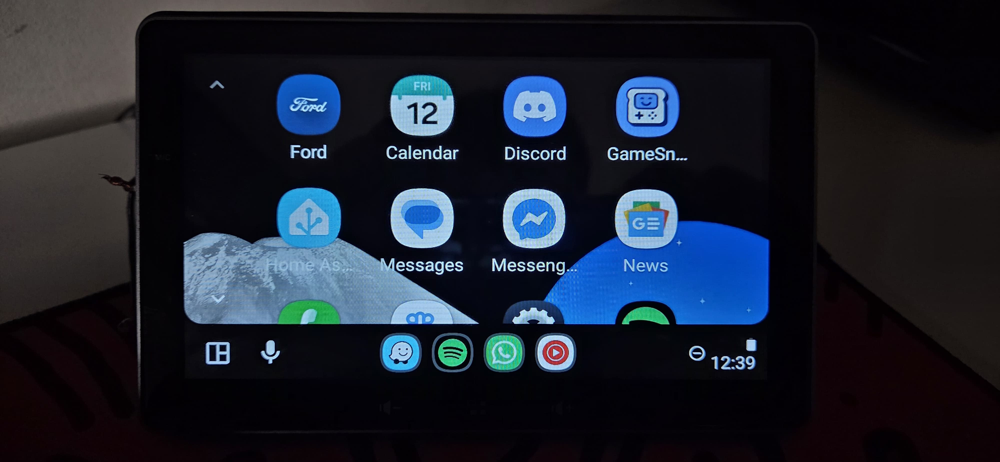
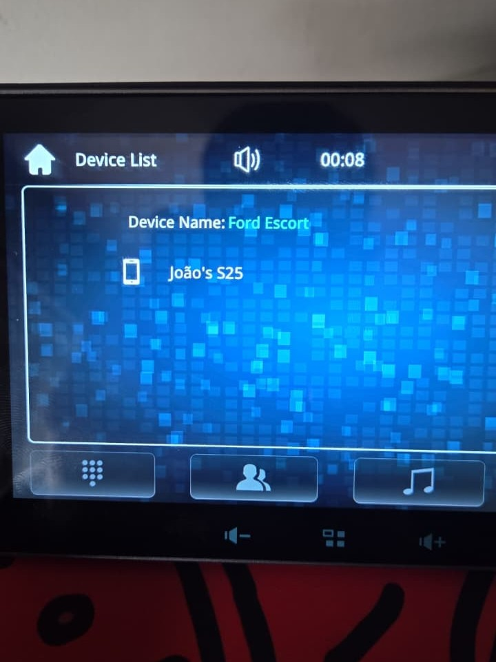
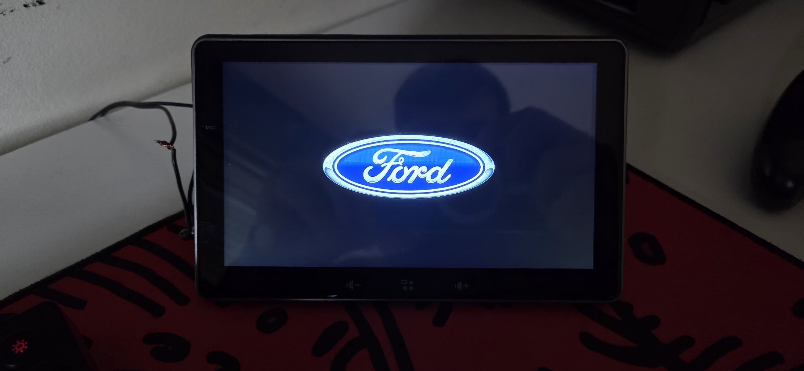

Personalizando Central Multimídia com Engenharia Reversa
Como uma troca de boot logo virou engenharia reversa de firmware? Conto aqui, um pouco da saga em descobrir um backdoor de fabricante numa central multimídia automotiva white label, e usar isso para replicar - mesmo que em essência - os sistemas multimídias da marca do meu carro.

O ponto de partida: eu só queria trocar uma logo!
O objetivo inicial era muito simples, mas o software não colaborava para a coisa ser tão fácil como deveria. Eu queria trocar a imagem de boot da central multimídia do meu carro, pois a que aparecia toda vez que ligava remetia a um produto extremamente genérico. A vítima em questão é uma daquelas centrais multimídias externas. Ela faz apenas o básico (espelhar o celular e ser um monitor para a câmera de ré). É baseada no SoC Sunplus SPHE8368-U e roda um sistema bastante enxuto com kernel Linux 4.9. Queria colocar uma logo da marca do meu carro (Ford). Nada de idéias sofisticadas, apenas uma imagem diferente na tela de boot.
Minha relação com este equipamento já tinha passado por uma "boa" no primeiro dia de uso: eu travei ela KKKKKKKKKKKKKKKK. Enquanto a explorava, descobri que nas configurações havia um menu de desenvolvedor. Na inocência de tentar abrir esse menu, inseri a senha padrão (1234), mas não esperava que simplesmente fazer isso, iria travar o sistema por completo. Em contato com o suporte da Navpro (fabricante do meu modelo), explicando o que havia ocorrido, eles me enviaram o arquivo de firmware oficial (ISPBOOOT.BIN) — que mantive salvo no meu PC desde então para o acaso de precisar no futuro. Esse futuro chegou bem antes do que eu imaginava.
Tentativas de acesso: MD5, soft brick e frustração
A primeira abordagem foi mais direta: descompilei o firmware, identificamos as partições existentes, fiz as alterações desejadas e recompilei. Parecia muito "fácil" para funcionar de primeira, mas como esperado, não funcionou. O processo de In-System Programming da Sunplus valida um hash MD5 do pacote completo antes de aceitar a gravação, e qualquer alteração no arquivo invalida essa assinatura.
Como não sou de desistir tão facilmente, optei por testar alguns firmwares de outras marcas que tivessem hardware semelhante, por curiosidade técnica. Os resultados variaram entre reinicializações em loop, imagem chuviscada na tela, e a própria central solicitando que um firmware fosse regravado para restabelecer o funcionamento. Nenhum resultado dessas tentativas chegou a ser catastrófico, mas deixou claro que regravação bruta por aqui era um terreno arriscado — e precisávamos de outro caminho de entrada.
A descoberta: um backdoor disfarçado de "arquivo não encontrado"
A reviravolta de toda essa aventura veio de um post que encontrei em um fórum alemão, onde um membro queria atingir o mesmo objetivo que eu: trocar a logo do boot. Outro membro nos deu a faca e o queijo para chegarmos no êxito da missão, o arquivo de nome gemn_auto.sh. Basicamente, o fabricante deixou uma "porta aberta" que permite executar scripts armazenados na raiz de qualquer pendrive ou microSD que seja inserido na central. Basta escrever qualquer comando no script e salvar com este nome mágico, que ele é executado silenciosamente com privilégios de root assim que a mídia for inserida.
E o comportamento é discreto por design. Ao inserir a mídia, a central exibe uma mensagem informando que "nenhum arquivo conhecido foi encontrado" — só que, por debaixo dos panos, o script já estava silenciosamente sendo executado. A única pista visível é o LED de atividade do pendrive, que pisca por um tempo mesmo sem nenhum arquivo "reconhecido" ter sido aberto. Ao conectar o mesmo pendrive no PC depois, aparece um log descrevendo exatamente qual script rodou, e em que data e hora.
Esse é o detalhe que separa o que é um bug de um backdoor: a interface mente sobre o que está acontecendo, enquanto o sistema executa código arbitrário em segundo plano com privilégios totais.
Mapeando o sistema
O gemn_auto.sh deu execução de comandos com privilégios de root — mas sem nenhuma interface interativa. Para contornar isso, a estratégia foi usar o próprio pendrive como canal de entrada e saída: comandos do BusyBox (ls, mount, cat) eram embutidos no script, com a saída redirecionada para arquivos .txt gravados de volta no pendrive.
Na prática, era um terminal "cego": cada comando exigia editar o script, inserir o pendrive na central, esperar a execução silenciosa, remover, e ler o resultado no PC. Lento, mas suficiente para mapear toda a árvore de diretórios do Linux embarcado e identificar a tabela de partições MTD:
| Tipo | Sistema de Arquivos | Partições | Papel |
|---|---|---|---|
| Somente leitura | SquashFS | rootfs, opt, spapp | Sistema base e aplicações |
| Gravável | YAFFS2 | nvm, userdata | Configuração e dados persistentes |
Com a topologia mapeada, o passo seguinte foi em extrair dumps físicos da NAND direto para o pendrive via dd, bit a bit. Conseguimos copiar as partições como mtd14 e mtd19 foram copiadas inteiras para análise posterior em editor hexadecimal no PC — incluindo os containers de imagem usados na tela de boot.
Trocando o "CPF" do sistema: o spoof do branding
Com acesso root e o sistema de arquivos mapeado, o projeto naturalmente cresceu além do que inicialmente queríamos. A pergunta seguinte foi: já que chegamos até aqui, com acesso total, o que mais a gente consegue fazer?
A resposta envolveu manipular a identidade que o sistema apresenta para o mundo externo, em três frentes:
Spoof do Android Auto. Editamos o arquivo de propriedades para injetar informações do sistema, como a montadora, modelo e ano do meu carro. Agora, durante o handshake de conexão, o smartphone passou a validar a central como um equipamento original Ford — em vez de identificá-la como um Rolls-Royce como ela fazia originalmente kkkkkkkk

Persistência de Wi-Fi e Bluetooth. Para que o nome da rede e do Bluetooth sobrevivessem ao desligamento da chave de ignição (e não voltassem ao padrão de fábrica), editamos os scripts de boot locais, para fixar permanentemente o SSID e o broadcast Bluetooth como "Ford Escort", o modelo real do meu carro.

E o mais bizarro de tudo isso é que literalmente não precisamos realizar nenhuma intervenção na parte física do equipamento. Simplesmente aproveitamos a "porta dos fundos" que o próprio fabricante deixou aberta, e a usamos para reescrever a identidade do sistema operacional embarcado.
O objetivo original, enfim: a logo da Ford!
Voltando ao motivo que começou tudo isso: a logo da Ford foi, sim, implementada com sucesso na tela de boot. Mas o caminho até lá teve uma reviravolta técnica própria — descrita a seguir.

O bloqueio remanescente: o MD5 que protege a NAND de si mesma
A partição de logo (mtd14) foi mapeada e extraída sem problemas. A surpresa veio no formato: não era um JPEG ou PNG comum, mas um container proprietário RAW RGBA, em resolução 1024x600, exigindo decodificação manual no editor hexadecimal para ser compreendido.
Decodificar não foi o problema — regravar, sim. Os scripts de atualização ISP da Sunplus mantêm um hash MD5 fixo (hardcoded) no sistema, validado no boot. Qualquer tentativa de sobrescrever essa partição bit a bit via dd pelo pendrive altera a assinatura esperada, e o sistema detecta a divergência na inicialização seguinte.
O risco é grande: forçar essa gravação fora da validação esperada tem alta chance de resultar em hard-brick — a central para de inicializar por completo, sem um caminho de recuperação simples.
Diante desse risco, a injeção direta de imagem na NAND ficou como um bloqueio técnico em aberto. A solução adotada foi direto ao ponto: vasculhando a partição raiz, notei que a própria ROM já trazia um pacote com dezenas de logos automotivas no diretório resource/logo/. A logo da Ford já estava lá. Foi só alterar o arquivo de configuração do sistema (na partição gravável YAFFS2) apontando para ela. O bypass do MD5 foi feito ignorando-o por completo.
Onde isso fica agora
O resultado final: uma central multimidia externa Navpro respondendo como uma Ford SYNC para o Android Auto, com SSID e Bluetooth fixos como "Ford Escort", boot logo da Ford, e um mapa completo da estrutura interna do sistema — partições, sistemas de arquivos, e o ponto exato onde a trava de segurança do fabricante impede ir além.
A trava do MD5 no bootloader continua como o próximo desafio em aberto. Entender exatamente como esse hash é gerado e validado é o que separaria um contorno funcional de uma solução completa para a partição de logo.
Mas isso é assunto para os próximos capítulos dessa saga hehe
Confira também um pouco dessa aventura no repositório do GitHub